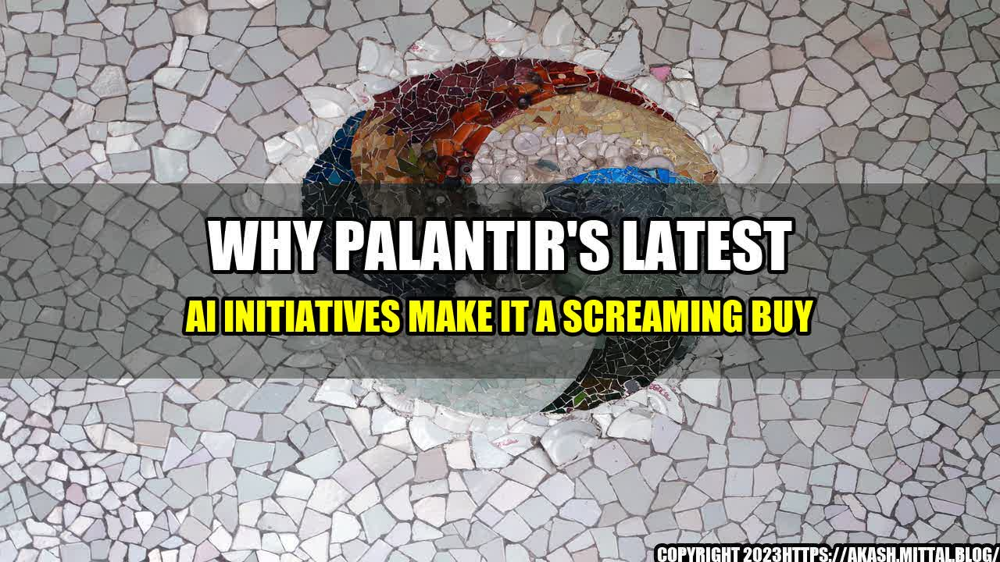

Why Palantir's Latest AI Initiatives Make It a Screaming Buy

Palantir Technologies is a software company that specializes in big data analysis and artificial intelligence. The company was founded in 2003 by a group of PayPal alumni and Stanford computer scientists, including Peter Thiel, who also co-founded PayPal. Palantir's platform allows organizations to analyze large amounts of data from various sources and make decisions based on that data.
Palantir's latest AI initiatives are what I believe make it a screaming buy.
The story that led to Palantir's AI initiatives
Palantir got involved in AI when it began working with the US military. The company was tasked with building a system that could analyze the vast amounts of data produced by the military and provide insights to help with decision-making. The project was so successful that Palantir began applying the same technology to commercial enterprises, including financial institutions, healthcare providers, and insurance companies.
Palantir recently announced two AI initiatives that will help the company build on its success in the field:
- The development of Foundry AI: a platform that will enable developers to build powerful AI models quickly and easily. Foundry AI will be integrated with Palantir's existing Foundry platform, which allows companies to connect data from various sources and derive insights from it.
- The acquisition of two AI startups: Silk and Kimera Systems. Silk specializes in natural language processing, while Kimera Systems is working on a decentralized AI platform that can run on any device. The addition of these two startups will give Palantir access to cutting-edge AI technology and talent.
Quantifiable examples of Palantir's AI success
Palantir's AI technology has already helped clients in various industries:
- In finance, Palantir has helped hedge funds identify potential insider trading and other compliance violations.
- In healthcare, Palantir has helped hospitals identify patients who are at risk of readmission and provided recommendations for managing their care.
- In insurance, Palantir has helped insurers identify fraudulent claims and reduce loss ratios.
Palantir has also been successful in the public sector:
- Palantir's technology was used to help track down Osama bin Laden.
- Palantir is currently working with the National Institutes of Health on a project to analyze genomic data and develop personalized treatments for cancer patients.
- Palantir is also working with the Centers for Disease Control and Prevention to track the spread of Zika virus.
Why Palantir is a screaming buy
Here are three reasons why I believe Palantir is a screaming buy:
- Potential for growth: Palantir's AI initiatives have the potential to drive significant growth for the company. With the development of Foundry AI and the acquisition of Silk and Kimera Systems, Palantir is positioning itself to be a leader in AI technology.
- Strong client base: Palantir has a strong client base that includes government agencies, financial institutions, healthcare providers, and insurance companies. The company has already proven its ability to provide value to these clients through its big data and AI capabilities.
- Leadership team: Palantir's leadership team includes co-founder Peter Thiel, CEO Alex Karp, and President Stephen Cohen. These individuals have a successful track record in entrepreneurship and technology, and are committed to driving Palantir's success.
Conclusion
Palantir's latest AI initiatives make it a screaming buy. With the development of Foundry AI, the acquisition of Silk and Kimera Systems, and a strong client base, Palantir is positioning itself to be a leader in AI technology. The company's success in various industries, as well as its strong leadership team, further support my belief that Palantir is a good investment.
So, if you're looking to invest in a company with significant growth potential in the AI field, Palantir is definitely worth considering!
"We believe that the emergence of AI technologies will be one of the most transformative developments of the 21st century, and we are committed to being at the forefront of this revolution." - Alex Karp, CEO of Palantir Technologies
Curated by Team Akash.Mittal.Blog
Share on Twitter Share on LinkedIn